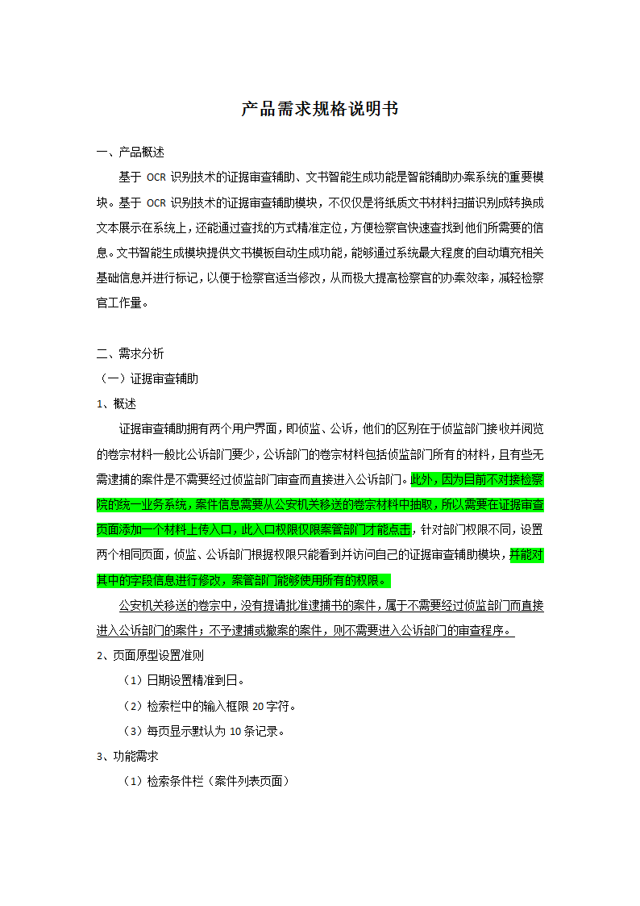
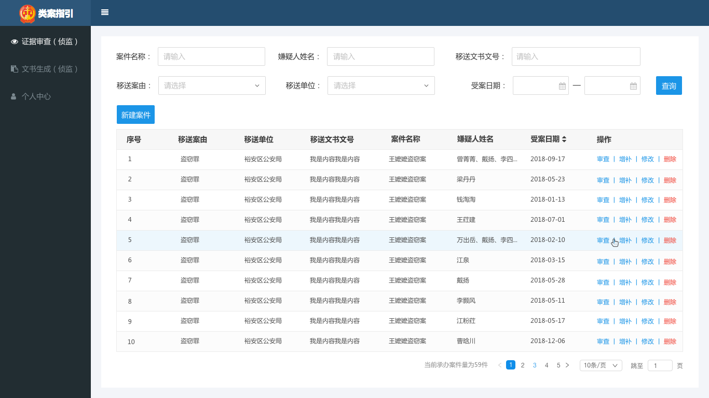

<!DOCTYPE html>
<html lang="en">
<head>
    <meta charset="UTF-8">
    <meta name="viewport" content="width=device-width, initial-scale=1.0">
    <meta http-equiv="X-UA-Compatible" content="ie=edge">
    <title>Document</title>
    <script src="http://apps.bdimg.com/libs/jquery/1.10.2/jquery.min.js"></script>
</head>
<body>
    <div style="width:300px;height:500px">
            <!-- <iframe id= 'pdf' src="http://localhost:8080/fd-ppo-guide/api/pdf/03445672" type="" width="800px" height="600px"></iframe> -->
            <!-- <iframe id= 'pdf' src="./1.pdf" type="" width="800px" height="600px"></iframe> -->
            
            <!--  -->
            <canvas id="the-canvas" ></canvas>
    </div>
    <input type="text" name="" id="">

    <!--  -->
</body>
<script src="./pdf.js"></script>
<script>
 var url = './1.pdf';
             PDFJS.workerSrc = './pdf.worker.js';
             PDFJS.getDocument(url).then(function getPdfHelloWorld(pdf) {
                 pdf.getPage(1).then(function getPageHelloWorld(page) {
                        var scale = 1;
                        var viewport = page.getViewport(scale);
                        var canvas = document.getElementById('the-canvas');
                        var context = canvas.getContext('2d');
                        canvas.height = viewport.height;
                        canvas.width = viewport.width;
                        var renderContext = {
                            canvasContext: context,
                            viewport: viewport
                        };
                        page.render(renderContext);
                });
             });

</script>
</html>